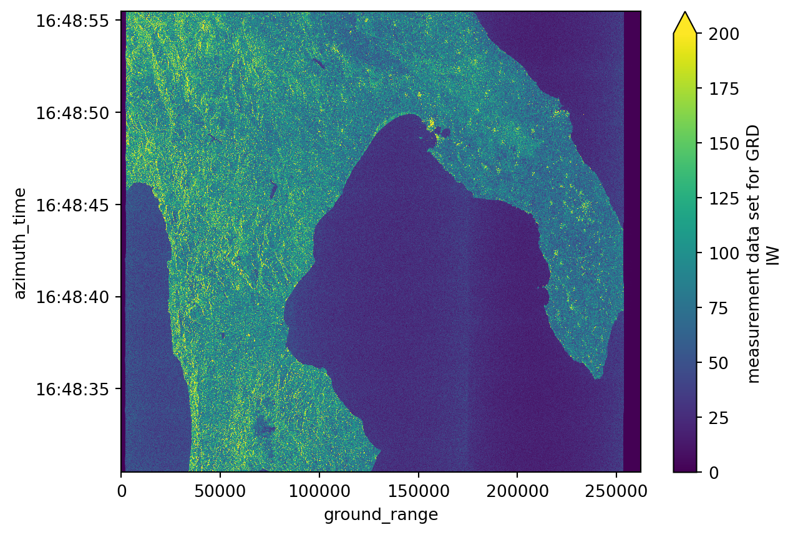
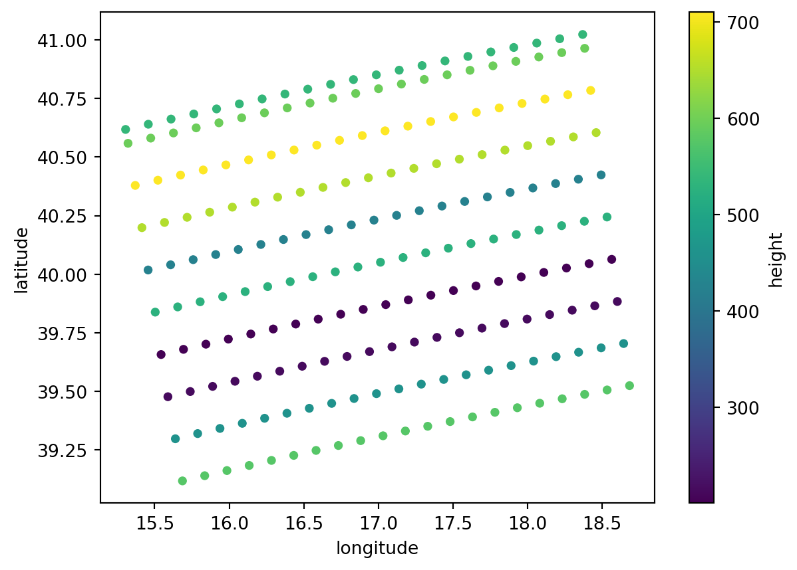
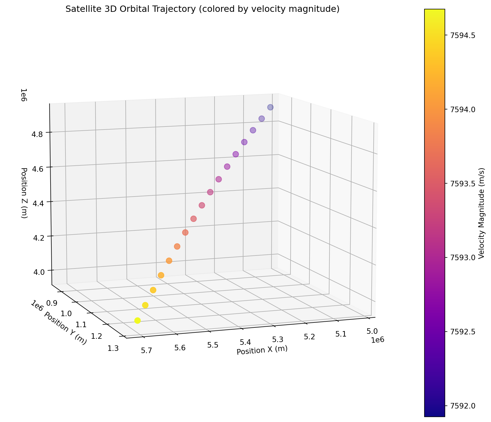

import xarray as xr # The basic package to deal with data arrays
import matplotlib.pyplot as plt
import numpy as np
from mpl_toolkits.mplot3d import Axes3D # For the orbit 3D plottingDiscover EOPF Zarr - Sentinel-1 GRD
Introduction
In this section, we will discover how to search and access Sentinel-1 GRD data through EOPF Zarr samples services and how the SAR data is structured inside the groups and subgroups of a .zarr product.
What we will learn
- 🗂️ How a Sentinel-1 GRD
.zarrproduct is structured? - 🔎 How to visualize some of the variables inside the
.zarrproduct? - 🚀 The practical meaning of some of these Sentinel-1 GRD variables
Prerequisites
This tutorial uses a re-processed sample dataset from the EOPF Sentinel Zarr Samples Service STAC API.
We will be using the Sentinel-1 GRD collection is available for direct access here.
The selected .zarr product from this collection is an item that corresponds to the 08th of May 2017, that visualises the Italian southern area:
S1A_IW_GRDH_1SDV_20170508T164830_20170508T164855_016493_01B54C_8604.
Import libraries
Helper functions
print_gen_structure
This function helps us to retrieve and visualise the names for each of the stored groups inside a .zarr product. As an output, it will print a general overview of elements inside the zarr.
def print_gen_structure(node, indent=""):
print(f"{indent}{node.name}") #allows us access each node
for child_name, child_node in node.children.items(): #loops inside the selected nodes to extract naming
print_gen_structure(child_node, indent + " ") # prints the name of the selected nodesSentinel-1 GRD structure
Opening the Zarr groups and subgroups
We start by unwrapping Sentinel-1 GRD .zarr products. You can use the xarray functions open_datatree()and open_dataset() to do this.
Let’s keep in mind the following: - set engine = "zarr", specifically designed for the encoding chosen for the EOPF by ESA. - chunks = {}, to keep the original chunking size defined in the .zarrfile metadata
productID = "S1A_IW_GRDH_1SDV_20170508T164830_20170508T164855_016493_01B54C_8604"
url = f"https://objectstore.eodc.eu:2222/e05ab01a9d56408d82ac32d69a5aae2a:sample-data/tutorial_data/cpm_b716/{productID}.zarr"
dt = xr.open_datatree(
url,
engine='zarr',
chunks={}
)
print_gen_structure(dt, indent="") # So we can visualize the data structure easilyNone
S01SIWGRD_20170508T164830_0025_A094_8604_01B54C_VH
conditions
antenna_pattern
attitude
azimuth_fm_rate
coordinate_conversion
doppler_centroid
gcp
orbit
reference_replica
replica
terrain_height
measurements
quality
calibration
noise
noise_range
S01SIWGRD_20170508T164830_0025_A094_8604_01B54C_VV
conditions
antenna_pattern
attitude
azimuth_fm_rate
coordinate_conversion
doppler_centroid
gcp
orbit
reference_replica
replica
terrain_height
measurements
quality
calibration
noise
noise_rangeAs we can see, Sentinel-1 GRD data is organised in a slightly different way compared to Sentinel-2 and Sentinel 3.
There are two main groups with the same subgroups, which correspond to the polarisation information. To identify each polarization you need to check the last two letters of each group.
For example: * S01SIWGRD_20170508T164830_0025_A094_8604_01B54C_VH corresponds to the VH polarization, and * S01SIWGRD_20170508T164830_0025_A094_8604_01B54C_VV corresponds to the VV polarization.
Each polarization group contains the conditions, measurements and quality subgroups. We can list all the groups for the VH polarisation calling .groups.
vh = dt.S01SIWGRD_20170508T164830_0025_A094_8604_01B54C_VH.groups
vh('/S01SIWGRD_20170508T164830_0025_A094_8604_01B54C_VH',
'/S01SIWGRD_20170508T164830_0025_A094_8604_01B54C_VH/conditions',
'/S01SIWGRD_20170508T164830_0025_A094_8604_01B54C_VH/measurements',
'/S01SIWGRD_20170508T164830_0025_A094_8604_01B54C_VH/quality',
'/S01SIWGRD_20170508T164830_0025_A094_8604_01B54C_VH/conditions/antenna_pattern',
'/S01SIWGRD_20170508T164830_0025_A094_8604_01B54C_VH/conditions/attitude',
'/S01SIWGRD_20170508T164830_0025_A094_8604_01B54C_VH/conditions/azimuth_fm_rate',
'/S01SIWGRD_20170508T164830_0025_A094_8604_01B54C_VH/conditions/coordinate_conversion',
'/S01SIWGRD_20170508T164830_0025_A094_8604_01B54C_VH/conditions/doppler_centroid',
'/S01SIWGRD_20170508T164830_0025_A094_8604_01B54C_VH/conditions/gcp',
'/S01SIWGRD_20170508T164830_0025_A094_8604_01B54C_VH/conditions/orbit',
'/S01SIWGRD_20170508T164830_0025_A094_8604_01B54C_VH/conditions/reference_replica',
'/S01SIWGRD_20170508T164830_0025_A094_8604_01B54C_VH/conditions/replica',
'/S01SIWGRD_20170508T164830_0025_A094_8604_01B54C_VH/conditions/terrain_height',
'/S01SIWGRD_20170508T164830_0025_A094_8604_01B54C_VH/quality/calibration',
'/S01SIWGRD_20170508T164830_0025_A094_8604_01B54C_VH/quality/noise',
'/S01SIWGRD_20170508T164830_0025_A094_8604_01B54C_VH/quality/noise_range')Browsing information inside Zarr
Now that we know how to access each polarisation group, we can check where some of the relevant information is stored. These variables will help us visualise results.
For example, to access the measurements subgroup, we can used the .open_dataset() function. Important is to specify the group we are interested in with the help of the group keyword argument.
measurements = xr.open_dataset(
url,
engine="zarr",
group="S01SIWGRD_20170508T164830_0025_A094_8604_01B54C_VH/measurements",
chunks={}
)
measurements<xarray.Dataset> Size: 877MB
Dimensions: (azimuth_time: 16694, ground_range: 26239)
Coordinates:
* azimuth_time (azimuth_time) datetime64[ns] 134kB 2017-05-08T16:48:30.467...
line (azimuth_time) int64 134kB dask.array<chunksize=(16694,), meta=np.ndarray>
* ground_range (ground_range) float64 210kB 0.0 10.0 ... 2.624e+05 2.624e+05
pixel (ground_range) int64 210kB dask.array<chunksize=(26239,), meta=np.ndarray>
Data variables:
grd (azimuth_time, ground_range) uint16 876MB dask.array<chunksize=(2557, 26239), meta=np.ndarray>Another way to open a subgroup is converting the information showed on the data tree to a data set information, using .to_dataset() function.
measurements2 = dt["S01SIWGRD_20170508T164830_0025_A094_8604_01B54C_VH/measurements"].to_dataset()
if measurements == measurements2:
print("Yes, it's the same!")
measurements2Yes, it's the same!<xarray.Dataset> Size: 877MB
Dimensions: (azimuth_time: 16694, ground_range: 26239)
Coordinates:
* azimuth_time (azimuth_time) datetime64[ns] 134kB 2017-05-08T16:48:30.467...
line (azimuth_time) int64 134kB dask.array<chunksize=(16694,), meta=np.ndarray>
* ground_range (ground_range) float64 210kB 0.0 10.0 ... 2.624e+05 2.624e+05
pixel (ground_range) int64 210kB dask.array<chunksize=(26239,), meta=np.ndarray>
Data variables:
grd (azimuth_time, ground_range) uint16 876MB dask.array<chunksize=(2557, 26239), meta=np.ndarray>Understanding and visualizing SAR products
We can do the same for other subgroups that contain SAR information.
Ground Range Detected
A Ground Range Detected (GRD) product shows us the amplitude of a SAR image. The amplitude reflects the intensity of the radar backscatter, which is the same thing as saying that the amplitude shows how much energy is reflected or absorbed by the surface.
Because the grd variable is very heavy for plotting, we need to decimate it. Applying the .isel() method is useful in this case because we can decimate the image for a faster and more effiecient plotting, without losing visual information. We will use the dataset created before for measurements to access the grd variable.
grd = measurements.grd
grd_decimated = grd.isel(
azimuth_time=slice(None, None, 10), ground_range=slice(None, None, 10)
)grd_decimated.plot(vmax=200)
plt.show()
Sigma Nought and Digital Number
We can find the calibration subgroup inside the quality subgroup. It is valuable to take a look at it, as it provides data concerning:
sigma_noughtor backscatter coefficient: It represents the strength of the radar signal backscattered (or reflected back) from a target on Earth’s surface. See it as how much radar energy is reflected back toward the satellite from a unit area on the ground (ground range or horizontal area). This information is rescaled to decibels (dB) in a common workflow.dn: A digital number representing the raw intensity data measured by the SAR sensor.beta_noughtandgamma: Conceptually they describe the same assigma_noughtbut with different “geometries”. Thebeta_noughtcorresponds to the raw calibrated radar brightness, same assigma_noughtbut still containing the incident angle infornmation, meaning before any terain correction is applied. Thegammaor gamma nought is normalized to the area perpendicular to the radar look direction. Both of these variables are much more influenced by the terrain features than thesigma_nought.
calibration = dt["S01SIWGRD_20170508T164830_0025_A094_8604_01B54C_VH/quality/calibration"].to_dataset()
calibration<xarray.Dataset> Size: 292kB
Dimensions: (azimuth_time: 27, ground_range: 657)
Coordinates:
* azimuth_time (azimuth_time) datetime64[ns] 216B 2017-05-08T16:48:30.4679...
line (azimuth_time) uint32 108B dask.array<chunksize=(27,), meta=np.ndarray>
* ground_range (ground_range) float64 5kB 0.0 6.677e+06 ... 4.38e+09
pixel (ground_range) uint32 3kB dask.array<chunksize=(657,), meta=np.ndarray>
Data variables:
beta_nought (azimuth_time, ground_range) float32 71kB dask.array<chunksize=(27, 657), meta=np.ndarray>
dn (azimuth_time, ground_range) float32 71kB dask.array<chunksize=(27, 657), meta=np.ndarray>
gamma (azimuth_time, ground_range) float32 71kB dask.array<chunksize=(27, 657), meta=np.ndarray>
sigma_nought (azimuth_time, ground_range) float32 71kB dask.array<chunksize=(27, 657), meta=np.ndarray>Let’s isolate the different backscatter coefficients in numpy arrays and then plot them to see the differences (comparing it also with the xarray plot).
# Isolating the three calibration parameters into numpy arrays
beta0 = calibration.beta_nought.data
gamma = calibration.gamma.data
sigma0 = calibration.sigma_nought.data
# Plotting the three calibration parameters
print("beta nought array:", beta0)
print("\n")
print("gamma array:", gamma)
print("\n")
print("sigma nought array:", sigma0)beta nought array: dask.array<open_dataset-beta_nought, shape=(27, 657), dtype=float32, chunksize=(27, 657), chunktype=numpy.ndarray>
gamma array: dask.array<open_dataset-gamma, shape=(27, 657), dtype=float32, chunksize=(27, 657), chunktype=numpy.ndarray>
sigma nought array: dask.array<open_dataset-sigma_nought, shape=(27, 657), dtype=float32, chunksize=(27, 657), chunktype=numpy.ndarray># Analyzing the three calibration parameters with respect to their unique values and shape
print("Number of unique values on beta nought array:", len(np.unique_values(beta0)), "and shape of it:", beta0.shape)
print("Number of unique values on gamma nought array:", len(np.unique_values(gamma)), "and shape of it:", gamma.shape)
print("Number of unique values on sigma nought array:", len(np.unique_values(sigma0)), "and shape of it:", sigma0.shape)Number of unique values on beta nought array: 1 and shape of it: (27, 657)Number of unique values on gamma nought array: 657 and shape of it: (27, 657)
Number of unique values on sigma nought array: 657 and shape of it: (27, 657)# Plotting the three calibration parameters to visually see the differences
fig, axes = plt.subplots(2, 3, figsize=(15, 6))
axes[0, 0].plot(beta0)
axes[0, 0].set_title("beta nought (numpy plot)")
axes[0, 1].plot(gamma)
axes[0, 1].set_title("gamma (numpy plot))")
axes[0, 2].plot(sigma0)
axes[0, 2].set_title("sigma nought (numpy plot)")
calibration.beta_nought.plot(ax=axes[1, 0])
axes[1, 0].set_title("beta nought (xarray plot)")
calibration.gamma.plot(ax=axes[1, 1])
axes[1, 1].set_title("gamma (xarray plot)")
calibration.sigma_nought.plot(ax=axes[1, 2])
axes[1, 2].set_title("sigma nought (xarray plot)")
plt.tight_layout()
plt.show()
We see that all the variables are different and we can conclude the following: 1. first of all, the actual values on each backscatter coeficient array differ from each other. 2. even though beta_nought has the same shape as the other components, is an array with one repeated value. 3. gamma and sigma_nought have 657 different values, which means that the variation of the values happens on the ground_range range.
GCP
The gcp subgroup inside conditions is also important. GCP stands for ground control points which are known and precise geolocated references on the Earth’s surface. They can be used later to georeference the GRD image.
gcp = dt["S01SIWGRD_20170508T164830_0025_A094_8604_01B54C_VH/conditions/gcp"].to_dataset()
gcp<xarray.Dataset> Size: 12kB
Dimensions: (azimuth_time: 10, ground_range: 21)
Coordinates:
* azimuth_time (azimuth_time) datetime64[ns] 80B 2017-05-08T16:48:...
line (azimuth_time) uint32 40B dask.array<chunksize=(10,), meta=np.ndarray>
* ground_range (ground_range) float64 168B 0.0 ... 2.624e+05
pixel (ground_range) uint32 84B dask.array<chunksize=(21,), meta=np.ndarray>
Data variables:
azimuth_time_gcp (azimuth_time, ground_range) datetime64[ns] 2kB dask.array<chunksize=(10, 21), meta=np.ndarray>
elevation_angle (azimuth_time, ground_range) float64 2kB dask.array<chunksize=(10, 21), meta=np.ndarray>
height (azimuth_time, ground_range) float64 2kB dask.array<chunksize=(10, 21), meta=np.ndarray>
incidence_angle (azimuth_time, ground_range) float64 2kB dask.array<chunksize=(10, 21), meta=np.ndarray>
latitude (azimuth_time, ground_range) float64 2kB dask.array<chunksize=(10, 21), meta=np.ndarray>
longitude (azimuth_time, ground_range) float64 2kB dask.array<chunksize=(10, 21), meta=np.ndarray>
slant_range_time_gcp (azimuth_time, ground_range) float64 2kB dask.array<chunksize=(10, 21), meta=np.ndarray>gcp.plot.scatter(x="longitude", y="latitude", hue="height")
plt.show()
Orbit
orbit subgroup inside conditions is a variable that reflects how the orbital trajectory of the satellite behaved during the flight.
orbit = dt["S01SIWGRD_20170508T164830_0025_A094_8604_01B54C_VH/conditions/orbit"].to_dataset()
orbit<xarray.Dataset> Size: 952B
Dimensions: (azimuth_time: 17, axis: 3)
Coordinates:
* azimuth_time (azimuth_time) datetime64[ns] 136B 2017-05-08T16:47:24.0541...
Dimensions without coordinates: axis
Data variables:
position (azimuth_time, axis) float64 408B dask.array<chunksize=(17, 3), meta=np.ndarray>
velocity (azimuth_time, axis) float64 408B dask.array<chunksize=(17, 3), meta=np.ndarray># Extract position components (X, Y, Z coordinates in space)
pos_x = orbit.position[:, 0]
pos_y = orbit.position[:, 1]
pos_z = orbit.position[:, 2]
# Extract velocity components and calculate magnitude
vel_x = orbit.velocity[:, 0]
vel_y = orbit.velocity[:, 1]
vel_z = orbit.velocity[:, 2]
velocity_magnitude = np.sqrt(vel_x**2 + vel_y**2 + vel_z**2)
# Convert time to numeric for potential use in point sizing
time_numeric = (orbit.azimuth_time - orbit.azimuth_time[0]) / np.timedelta64(1, 's')
fig = plt.figure(figsize=(12, 10))
ax = fig.add_subplot(111, projection='3d')
# 3D scatter plot: X, Y, Z positions colored by velocity magnitude
scatter = ax.scatter(pos_x, pos_y, pos_z,
c=velocity_magnitude, cmap='plasma', s=60)
ax.set_xlabel('Position X (m)')
ax.set_ylabel('Position Y (m)')
ax.set_zlabel('Position Z (m)')
plt.colorbar(scatter, label='Velocity Magnitude (m/s)')
ax.set_title('Satellite 3D Orbital Trajectory (colored by velocity magnitude)')
# Set a good viewing angle
ax.view_init(elev=10, azim=70)
plt.show()💪 Now it is your turn
With everything we have learnt so far, you are now able to explore Sentinel-1 GRD items and plot their visuals.
Task 1: Reproduce the workflow with your dataset
Define an area of interest, search and filter the Sentinel-1 GRD collection for the area where you live. Explore the data tree, and the structure of one of the items.
Task 2: Explore other variables
We’ve learnt how to look, explore and plot some specific variables inside the .zarr subgroups, but there are many more. Try to explore and understand what are some other variables, like terrain_height our noise_range.
Task 3: Play with the image plotting
There are many ways to plot an image. Try to play with the variables you are plotting, changing the axis coordinates, maximum values shown or hue values.
Conclusion
This tutorial provided the basics to explore and understand how the Sentinel-1 GRD is structured inside the .zarr format and what to expect to find inside of it.
What’s next?
The next notebook shows how to perform basic operations on .zarr Sentinel-1 GRD data, using some of the variables we have discovered in this section.